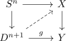
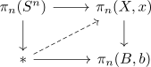
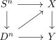

serre fibration and injective on homotopy group and strict lift of sphere filling
Proposition
Let $f: X \rightarrow Y$ be a serre fibration, which is a monomorphism on $\pi_n()$ Then for each lifting problem

TFAE:
- there exists a lift
- there exists a lift on $\pi_n$

Proof
1) $\implies$ 2)
follows from applying $\pi_n$
2) $\implies$ 1)
by injectivity we may conclude that
\begin{align*}
S^n \rightarrow X
\end{align*}
represents the zero element, since $S^n \rightarrow D^{n+1} \rightarrow Y$ is the zero element.
Then by trivial element in a homotopy group and extension this extends to

where the upper triangle commutes strictly and the bottom triangle commutes up to homotopy: we may take a homotopy from $D^n \rightarrow X \rightarrow Y$ to the constant map at the basepoint $y$ and then from there to $D^n \rightarrow Y$.
Then by lift of serre fibration and cw inclusion and strictifying we may assume, that this lift is strict.